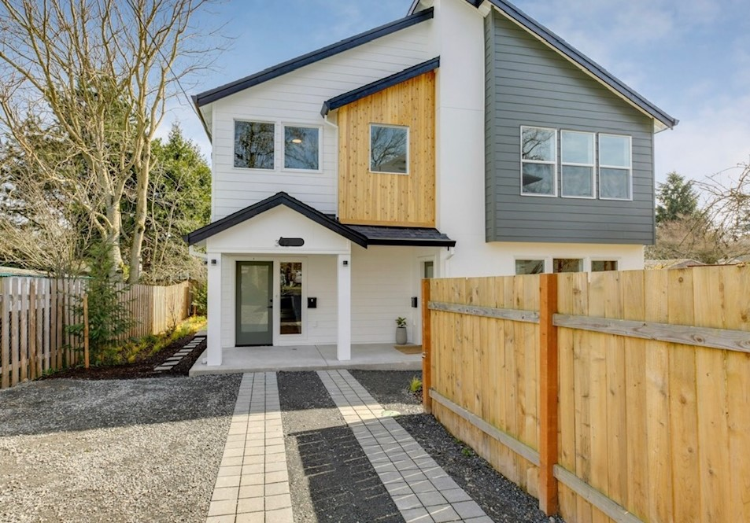

About the Neighborhood
Our Recommendations
More About Portland
Day Trips and Surrounding Areas
PDX Urban Hideaway
An urban escape in the heart of Montavilla. Near public transportation, freeways, and hospitals.

The front entrance to PDX Urban Hideaway. Credit: Kristin Klotter